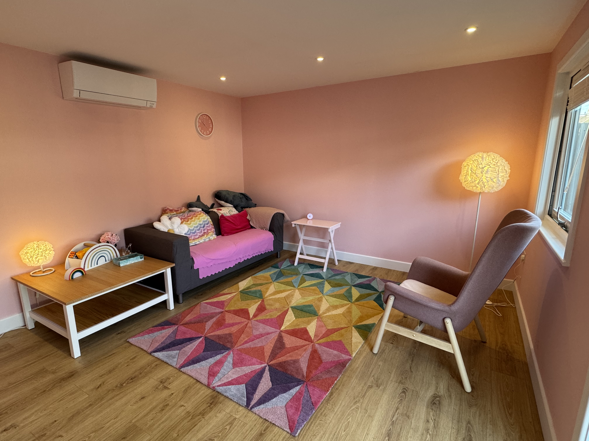
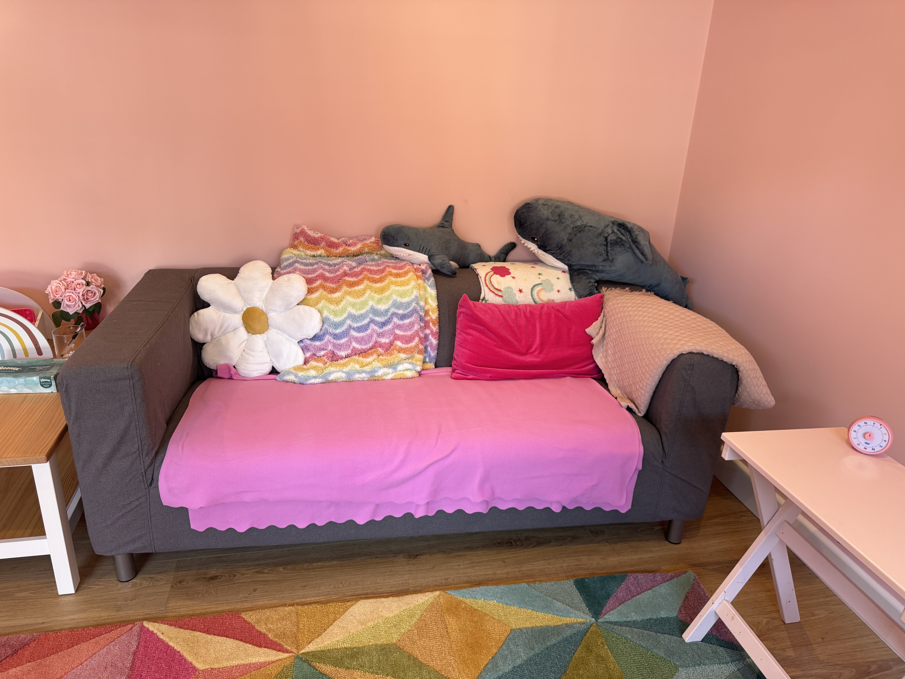

"Rarely, if ever, are any of us healed in isolation.
Healing is an act of communion"
– bell hooks, All About Love
Sophie (she/her) is a fully qualified, body-positive, LGBTQIA+ inclusive, neurodivergent affirming counsellor.
Sophie offers a judgement and shame-free space for you to talk through your thoughts and feelings.
Sophie is qualified to work with young people, from the age of 11. She offers a supportive space to explore the challenges young people face, including anxiety, low self esteem, relationships, school stress, identity and more.
Sophie will provide a space to use creativity in counselling, including art and music.
If you want to stim, sketch, or move during sessions, that is absolutely fine.
Sophie is an ally in the LGBTQIA+ community and will treat all people, no matter what their gender identity or sexuality, with kindness and compassion. Trans Lives Matter.
Sophie respects, values, and supports neurodivergent people. 'Neurodivergent' is a term which describes people whose brains function differently from what is considered 'neurotypical'.
Sophie is a body-positive therapist who accepts all body shapes, sizes, and appearances.
All bodies are worthy of care and respect no matter the size.
Sophie offers a shame-free environment where you can talk openly about body image issues, disordered eating, trauma related to body or appearance, and self-worth.
Counselling is a supportive, collaborative process where you can explore your thoughts, feelings, and experiences with a trained professional in a calm, confidential setting. It lasts as long as it’s helpful to you. There’s no fixed timeline, and you're in control.
Whether you're facing something specific, feeling overwhelmed, or simply want to understand yourself better, counselling can offer clarity, connection, and a sense of direction.
Sophie understands how difficult it can be to start something new. This is why she offers a free 15-minute phone/ Zoom consultation.
Speaking to Sophie will give you the opportunity to explore your counselling needs, ask any questions about the process, and learn more about fees and policies.
If you decide you'd like to meet Sophie for counselling sessions, these will be held on a regular basis, typically weekly.
Sessions are conducted online via Zoom or Face-to-face in Woodley, Reading, RG5.


Level 5 Diploma in Counselling Young People
Level 4 Diploma in Therapeutic Counselling
Level 3 Certificate in Counselling Studies
Level 2 Certificate in Understanding Children and Young People's Mental Health
Level 2 Certificate in Counselling Skills
Safeguarding and Suicide Prevention, June 2025
Breaking County Lines and Cuckooing, May 2025
Case Notes and Disclosures, February 2025
Working with Trauma, November 2024
Working with Neurodiverse Clients, July 2024
Vulnerability and Feedback, June 2024
Universal Safeguarding Children Online Training, October 2023
SPEAK: Suicide Prevention Training, May 2023
Sophie has over 250 hours of counselling experience – working with adults (age 18+) and young people (age 11 - 17), both online and face to face.
Ready to take the first step?
Contact Sophie today to schedule a free 15-minute consultation online or over the phone.
Sophie is here to listen, support, and guide you on your journey toward emotional well-being.
Phone
07435 225 056
Location
Online / Phone
Face-to-face in Woodley, Reading, RG5